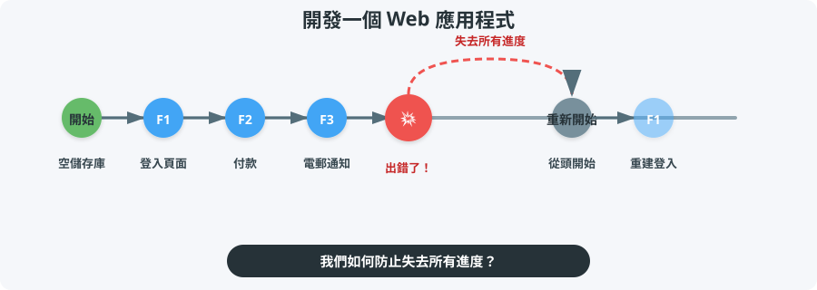
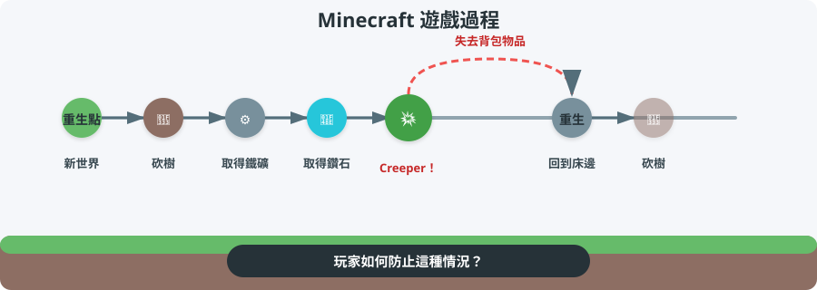
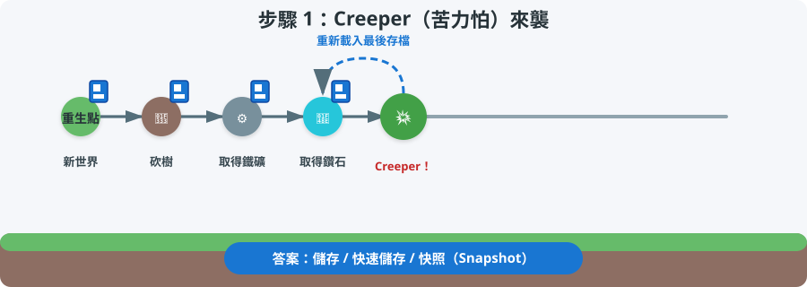
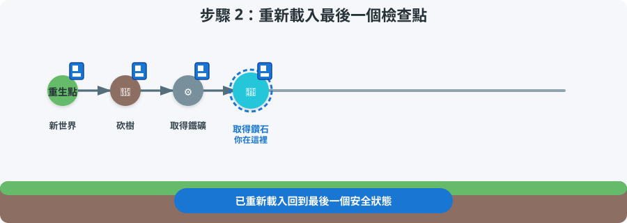
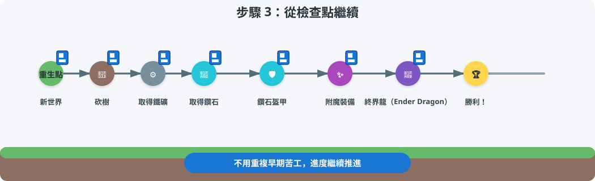
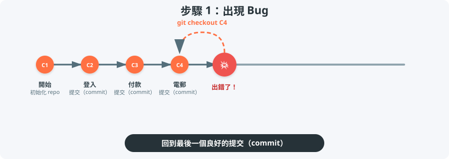
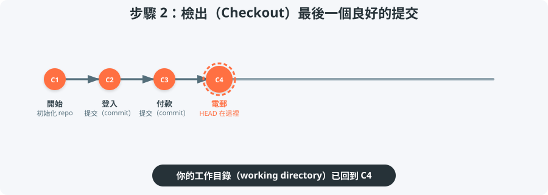
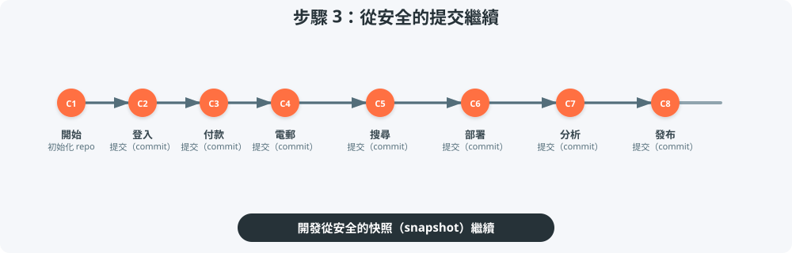
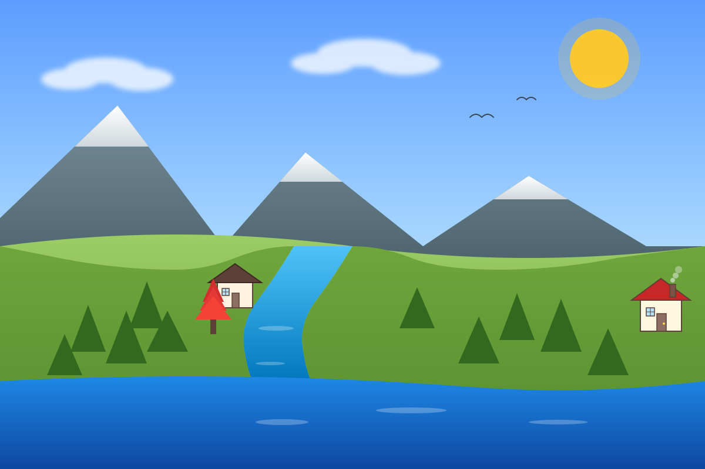

%%{init: {'theme': 'base', 'themeVariables': { 'git0': '#ff7043', 'git1': '#42a5f5', 'git2': '#66bb6a', 'git3': '#ab47bc' }}}%%
gitGraph
commit id: "Base landscape"
commit id: "Add house"
commit id: "Add red tree"
branch opposite-house
checkout opposite-house
commit id: "House opposite river"
checkout main
commit id: "House behind tree"
merge opposite-house id: "Merge opposite-house"
branch tower-and-ship
checkout tower-and-ship
commit id: "Antenna tower"
commit id: "Ship on ocean TS"
checkout main
commit id: "Add pond"
cherry-pick id: "Ship on ocean TS"
commit id: "Construction site"
branch car-park-road
checkout car-park-road
commit id: "Car park + road"
checkout main
commit id: "Bridge"
commit id: "Office building"
branch merge-accept-incoming
checkout merge-accept-incoming
merge car-park-road id: "Accept incoming"
checkout main
branch merge-reject-incoming
checkout merge-reject-incoming
merge car-park-road id: "Reject incoming"
checkout main
branch merge-manual-resolve
checkout merge-manual-resolve
merge car-park-road id: "Manual merge"
checkout main
merge merge-manual-resolve id: "Merge manual resolve"
Git：程式碼的檢查點（Checkpoint）
開發的惡夢

熟悉的遊戲情境

答案：使用 Checkpoint！

步驟 1：Creeper（苦力怕）來襲，重新載入最後存檔
重新載入檢查點

步驟 2：回到鑽石檢查點
從檢查點繼續

步驟 3：重新載入後繼續進度
核心概念： 檢查點讓你回到安全狀態，不必重頭開始就能繼續遊玩。
Git = 程式碼的檢查點

步驟 1：出現 Bug，檢出（Checkout）最後一個良好的提交
每個 Git 提交（commit） 都是你專案的一個快照（snapshot）。
檢出（Checkout）最後一個良好的提交

步驟 2：HEAD 回到最後一個良好的提交
繼續開發

步驟 3：在安全的提交之後新增提交
核心概念： Git 提交（commit）是可以返回、比較並繼續發展的快照（snapshot）。
我們的示範：風景場景
我們會用這個風景場景來解釋 Git。每個提交（commit）都會在場景中新增或修改一些東西。
基礎風景
我們的示範儲存庫（Repository）
我們會探索一個建立這個風景場景的小型儲存庫（repo）。
提交（Commit）實際操作
設計兩難
目前狀態

8d1987f — House behind red tree
如果……
- 我想嘗試把房子放在河的對岸？
- 我移動了它，然後覺得放在樹後面比較好看？
- 我如何在實驗的同時不會失去目前版本？
什麼是 Git 分支（Branch）？
%%{init: {'theme': 'base', 'themeVariables': { 'git0': '#ff7043', 'git1': '#42a5f5' }}}%%
gitGraph
commit id: "Base landscape"
commit id: "Add house"
commit id: "Add red tree"
branch opposite-house
checkout opposite-house
commit id: "House opposite river"
checkout main
commit id: "House behind tree"
分支（branch） 是從特定提交（commit）開始的獨立時間線。你可以自由實驗，同時原本的分支保持不變。
分支（Branch）實際操作
真實專案中的分支
%%{init: {'theme': 'base', 'themeVariables': { 'git0': '#ff7043', 'git1': '#42a5f5' }}}%%
gitGraph
commit id: "Initial setup"
commit id: "User login"
branch feature/payment
checkout feature/payment
commit id: "Payment form"
commit id: "Stripe integration"
checkout main
commit id: "Dashboard"
branch bugfix/login-error
checkout bugfix/login-error
commit id: "Fix auth bug"
checkout main
在真實開發中，你可以為了開發功能、修正錯誤或嘗試重構（refactor）而建立分支，而且這些都可以同時進行。
如果我們想要兩間房子都保留？

現在我們有兩個版本的房子。我們應該：
- 在
main上重建，失去樹後版本？ - 在
opposite-house上重建，失去原本版本？ - 合併（Merge） 它們，讓兩間房子一起出現？
合併（Merge）：結合時間線
%%{init: {'theme': 'base', 'themeVariables': { 'git0': '#ff7043', 'git1': '#42a5f5' }}}%%
gitGraph
commit id: "Base landscape"
commit id: "Add house"
commit id: "Add red tree"
branch opposite-house
checkout opposite-house
commit id: "House opposite river"
checkout main
commit id: "House behind tree"
merge opposite-house id: "Merge opposite-house" type: HIGHLIGHT
合併（merge） 會把兩個分支重新結合。
合併（Merge）實際操作
真實專案中的合併
%%{init: {'theme': 'base', 'themeVariables': { 'git0': '#ff7043', 'git1': '#42a5f5' }}}%%
gitGraph
commit id: "Initial setup"
commit id: "User login"
branch feature/payment
checkout feature/payment
commit id: "Payment form"
commit id: "Stripe integration"
checkout main
commit id: "Dashboard"
merge feature/payment id: "Merge payment"
在真實開發中，當功能分支（feature branch）準備好時，你會將它合併（merge）回 main。
合併結果

兩間房子都保留的合併後風景
46130e9 — Merge branch ‘opposite-house’
如果我們只想要一個變更？
tower-and-ship 分支

b5580ac — Add ship on ocean
目前的 main
46130e9— Merge branch ‘opposite-house’d1cd048— Add pond
如果我們只想要 main 上有「海上的船」這個變更，但不想合併整個 tower-and-ship 分支呢？
Cherry-Pick：複製一個提交
%%{init: {'theme': 'base', 'themeVariables': { 'git0': '#ff7043', 'git1': '#66bb6a' }}}%%
gitGraph
commit id: "Merge opposite-house"
branch tower-and-ship
checkout tower-and-ship
commit id: "Antenna tower"
commit id: "Ship on ocean"
checkout main
commit id: "Add pond"
cherry-pick id: "Ship on ocean"
Cherry-pick 會把單一提交（commit）從一個分支複製到另一個分支，而不需要合併（merge）整個分支。
當你只想要一個錯誤修正（bug-fix）或功能，而不是整個分支時，使用 cherry-pick。
Cherry-Pick 實際操作
真實專案中的 Cherry-Pick
%%{init: {'theme': 'base', 'themeVariables': { 'git0': '#ff7043', 'git1': '#66bb6a' }}}%%
gitGraph
commit id: "v1.0 release"
branch feature-search
checkout feature-search
commit id: "Search UI"
commit id: "Fix search crash"
checkout main
cherry-pick id: "Fix search crash"
在真實開發中，你可以從功能分支（feature branch）挑選（cherry-pick）單一錯誤修正提交（bug-fix commit）到發布分支（release branch）。
Cherry-Pick 的結果
Cherry-pick 海上船隻後的 main
280e899 — Add ship on ocean
我們如何合併這個？
main

6c20659 — Multi-story office building
car-park-road

fa941eb — Car park and road
什麼是合併衝突（Merge Conflict）？
當 Git 無法自動結合兩個分支，因為它們修改了同一個檔案的相同部分時，就會發生合併衝突（merge conflict）。
在真實開發中，這經常發生在：
- 兩位開發者修改同一個函式（function）
- 一個人重新命名檔案，同時另一個人修改了檔案內容
- 功能分支（feature branch）和
main都更新了同一個設定檔
發生衝突時，Git 提供三種解決方式：
- 拒絕所有傳入變更 — 保留
main版本 - 接受所有傳入變更 — 保留傳入分支版本
- 手動合併 — 自己結合兩個版本
策略 1：拒絕所有傳入變更
保留 main 版本，捨棄傳入的變更。

保留辦公大樓
734406d — Merge branch ‘car-park-road’ into merge-reject-incoming
策略 2：接受所有傳入變更
保留傳入分支版本，捨棄 main 的變更。

保留停車場
25eba09 — Merge branch ‘car-park-road’ into merge-accept-incoming
策略 3：手動合併
自己結合兩個版本，以取得兩全其美的結果。
兩全其美
dfbc161 — Manually resolve merge: office building with surrounding car park
三種分支處理方式
gitGraph
commit id: "Base"
branch feature
checkout feature
commit id: "Feature"
checkout main
commit id: "Main"
merge feature id: "Merge"
直接合併（Direct merge）
直接將功能分支（feature branch）合併（merge）到 main，並在 main 上解決衝突。
gitGraph
commit id: "Base"
branch feature
checkout feature
commit id: "Feature"
checkout main
commit id: "Main"
checkout feature
merge main id: "Merge main"
checkout main
merge feature id: "Merge feature"
先將 main 合併到功能分支
讓功能分支保持最新，在那裡解決衝突，然後再合併回 main。
gitGraph
commit id: "Base"
branch feature
checkout feature
commit id: "Feature"
checkout main
commit id: "Main"
branch sandbox
checkout sandbox
merge feature id: "Sandbox merge"
checkout main
merge sandbox id: "Merge sandbox"
沙盒分支（Sandbox branch）
建立一個臨時分支來進行合併，在沙盒（sandbox）中解決衝突，然後再合併到 main。
重點回顧
| 概念 | 作用 | 類比 |
|---|---|---|
| 提交（Commit） | 儲存程式碼的快照（snapshot） | 快速存檔（Quicksave） |
| 檢出（Checkout） | 回到先前的快照（snapshot） | 載入遊戲 |
| 分支（Branch） | 在平行時間線上工作 | 平行存檔欄位 |
| 合併（Merge） | 結合兩條時間線 | 合併存檔檔案 |
| 挑選（Cherry-pick） | 把單一快照複製到別處 | 複製單一存檔點 |
| 合併策略（Merge policy） | 選擇保留哪個版本 | 決定保留哪個版本 |
| 分支處理方式（Branch handling method） | 選擇在哪裡執行合併 | 挑選一個安全的地方來結合 |